22/07/2023 — Một người đàn ông ở độ tuổi 70 bị yếu và ngất
Bản dịch tiếng Việt của bài "A man in his 70s with weakness and syncope" – Dr. Smith’s ECG Blog. Giữ nguyên toàn bộ 12 hình ảnh của bản gốc.
Tác giả: Pendell Meyers
Một người đàn ông ở độ tuổi 70, không có tiền sử bệnh tim, đến viện vì yếu cấp tính, ngất và sốt. Ông phủ nhận đau ngực hay khó thở.
Một điện tâm đồ được ghi tại khoa cấp cứu (ED) lúc 1554:

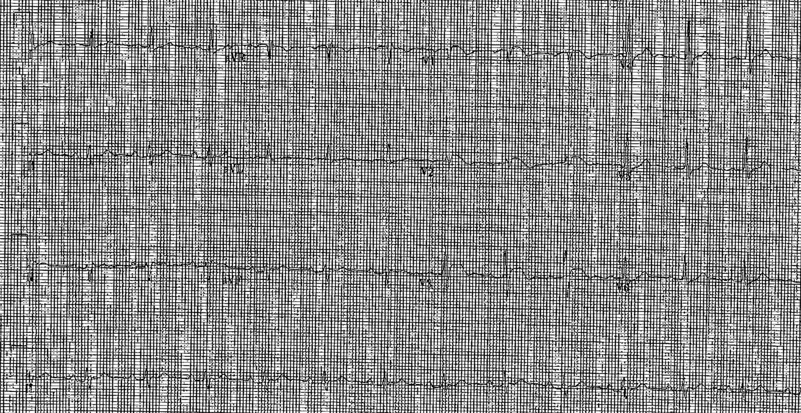

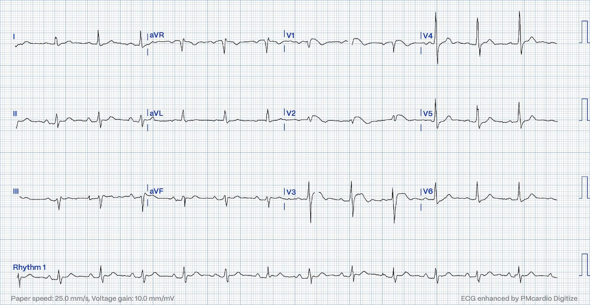
Nhịp xoang với phức bộ QRS phần lớn bình thường. Có ST chênh lên (STE) bất thường ở V1-V3, và có lẽ ST chênh xuống (STD) ở V5-6. Trong bối cảnh phù hợp, hình ảnh này có thể gợi lo ngại OMI thành trước/vách/thất phải. Nhưng cũng có hình thái có thể phù hợp với hình ảnh Brugada/kiểu hình sao chép Brugada (phenocopy), nhất là ở V2.
Trong bối cảnh lâm sàng yếu và sốt, không đau ngực hay khó thở, khả năng là hình ảnh Brugada rõ ràng cao hơn nhiều.
Tuy nhiên, bỏ sót một OMI sẽ để lại hậu quả khủng khiếp.
Bình luận của Smith: nếu đây là một bệnh nhân đau ngực, tôi sẽ nói rằng đây hoặc là OMI vách, hoặc là OMI thất phải đơn độc (RV OMI) cho đến khi chứng minh được điều ngược lại. Nhưng với các triệu chứng này, OMI không có nhiều khả năng. Ở một bệnh nhân ngất và sốt, điện tâm đồ này trông giống Brugada hơn.
Queen of Hearts chỉ dùng điện tâm đồ (cô ấy không biết bất kỳ bối cảnh lâm sàng nào), và đây là kết quả đọc của cô ấy:

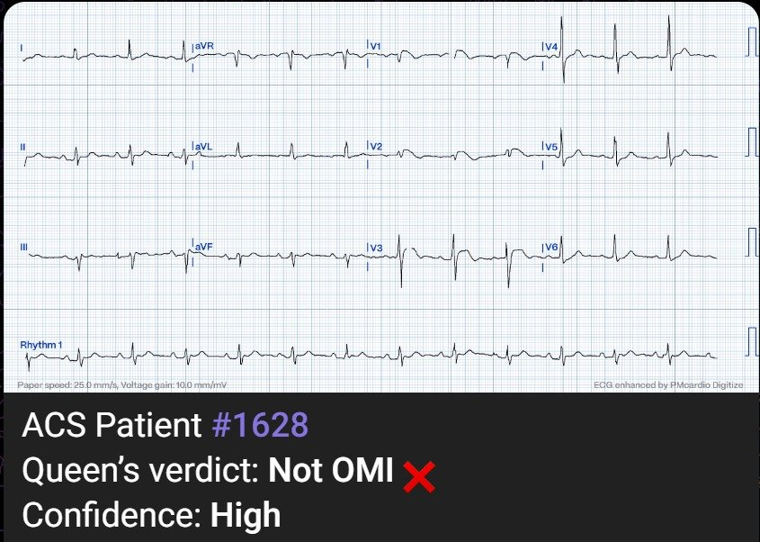
Bình luận của Smith: Queen đọc điện tâm đồ như thể bệnh nhân có đau ngực. Vậy nên có lẽ cô ấy giỏi hơn tôi.
Có sẵn một điện tâm đồ cũ từ 1 tháng trước:

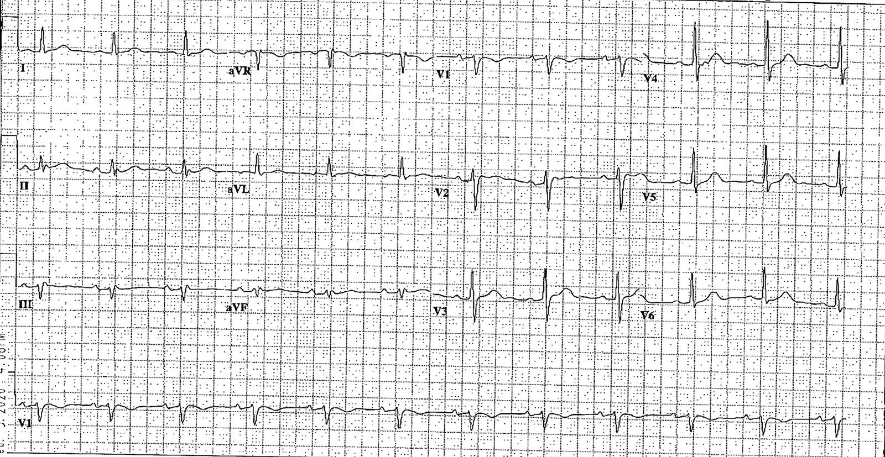
Điện tâm đồ lúc nhập viện được đọc là STEMI và bệnh nhân được chuyển cấp cứu đến trung tâm có PCI gần nhất.
Bình luận của Smith: điện tâm đồ đang bàn có thể là do Brugada, dù có thay đổi so với điện tâm đồ nền. Chúng ta biết rằng sốt thường có thể bộc lộ Brugada.
Một điện tâm đồ ghi lại được thực hiện trước khi thông tim, lúc 1610:

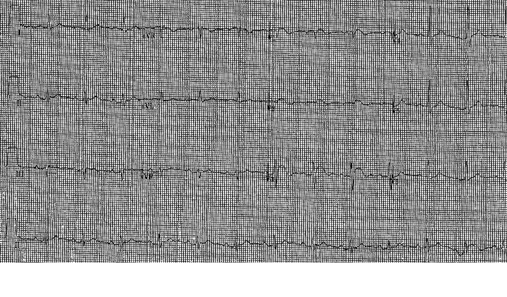

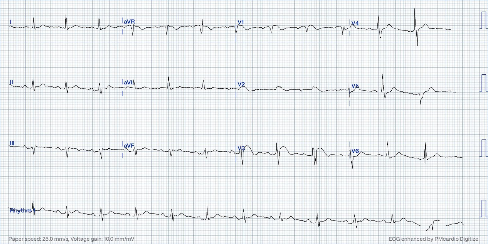
Diễn giải của QOH (Queen of Hearts):

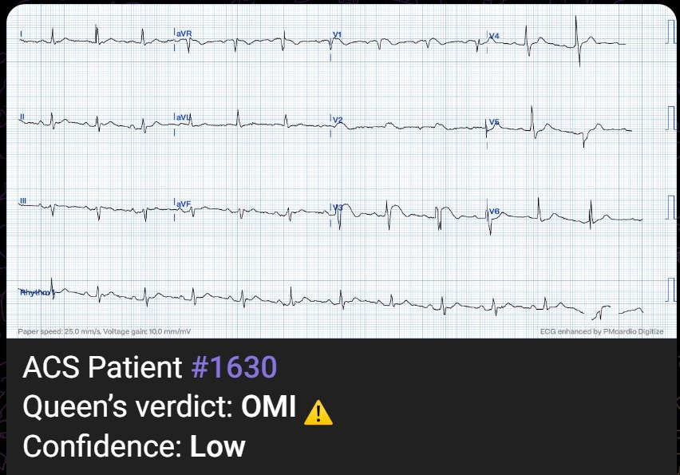
Troponin I ban đầu (thế hệ cũ) tại khoa cấp cứu đầu tiên chỉ vừa dương tính, ở mức 0,06 ng/mL.
Bệnh nhân được đưa đi thông tim, tại đó mọi động mạch vành đều được mô tả là bình thường, không có bằng chứng của bất kỳ bệnh động mạch vành (CAD), co thắt hay bất thường nào khác.
Một xét nghiệm troponin khác được lấy vào khoảng thời điểm thông tim, troponin T (thế hệ cũ), kết quả bình thường, dưới 0,01 ng/mL.
Siêu âm tim chính thức cho thấy EF bình thường, không có rối loạn vận động thành, không có tràn dịch màng ngoài tim.
Không làm thêm xét nghiệm troponin nào nữa.
Bệnh nhân được phát hiện dương tính với cúm.
1849 sau thông tim:

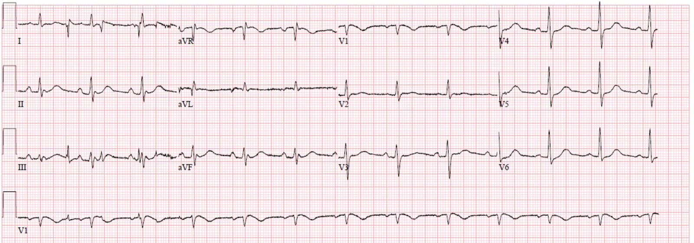
Sáng hôm sau:

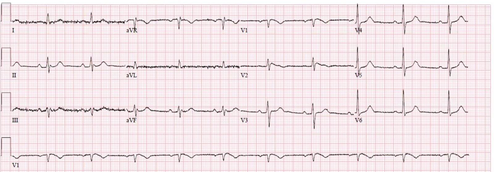
Có phải lại sốt nữa không?
Không ghi nhận rối loạn nhịp nào trên monitor tim trong thời gian theo dõi.
Ngất và yếu được quy cho bệnh cấp tính do cúm.
Bệnh nhân hồi phục tốt và cuối cùng được xuất viện về nhà.
Xem thêm các ca Brugada do sốt tại đây.
Phần bàn luận này lấy từ bài trước đây:
Hyperthermia and ST Elevation (Tăng thân nhiệt và ST chênh lên)
Bàn luận
Các thay đổi điện tâm đồ Brugada típ 1 có liên quan đến đột tử do tim (SCD) và sự xuất hiện của rối loạn nhịp thất. Bệnh nhân xuất hiện hình ảnh típ 1 mà không có bất kỳ yếu tố thúc đẩy hay khởi phát nào có nguy cơ SCD 0,5-0,8% mỗi năm. Bệnh nhân chỉ có hình ảnh này khi được khởi phát bằng một thuốc chẹn kênh natri thì có tỷ lệ SCD thấp hơn (0 – 0,35% mỗi năm)[1]. Các thuốc đã được ghi nhận có liên quan với hình ảnh điện tâm đồ Brugada gồm thuốc chống trầm cảm ba vòng, thuốc gây mê, cocaine, methadone, thuốc kháng histamin, rối loạn điện giải, và thậm chí cả tramadol. [2].
Bệnh nhân của chúng tôi có hình ảnh Brugada típ 1 được khởi phát bởi nhiệt độ trung tâm tăng cao, đây cũng là một hiện tượng đã được ghi nhận trong y văn. Bà ấy đang dùng amitriptyline 50 mg/ngày nhưng không dùng thuốc nào khác có thể ảnh hưởng đến kênh natri [người dịch: đoạn bàn luận này lấy nguyên từ bài trước, nói về một bệnh nhân nữ, không phải bệnh nhân nam của ca hôm nay]. Có nhiều báo cáo ca bệnh về ST chênh lên với hình ảnh Brugada liên quan đến sốt do nhiễm trùng [3, 4]. Người ta đặt giả thuyết rằng tốc độ bất hoạt kênh natri có thể nhạy cảm với nhiệt độ và sốt có thể làm suy giảm độ dẫn qua các kênh natri [5, 6]. Trong nghiên cứu lớn nhất về chủ đề này của Mizusawa và cs., 88 bệnh nhân có thay đổi điện tâm đồ Brugada típ 1 do sốt khởi phát, không có tiền sử ngất hay VF/VT, đã được phân tích. Tỷ lệ mới mắc SCD trong đoàn hệ này là 0,9% mỗi năm [1].
Trước nghiên cứu của Mizusawa, người ta cho rằng tỷ lệ mới mắc ngất, rối loạn nhịp hay SCD trong nhóm này là thấp [7]. Trong số những người có hình ảnh típ 1 do sốt khởi phát, khoảng 80% cũng có thay đổi típ 1 do thuốc khởi phát khi làm nghiệm pháp kích thích. Chỉ 26% trong nhóm mang đột biến SCN5A và 20% có tiền sử gia đình SCD [1]. Có vẻ như việc có hình ảnh điện tâm đồ Brugada típ 1 chỉ bộc lộ khi sốt báo hiệu nguy cơ SCD tương tự hội chứng Brugada tự phát, nhưng các nghiên cứu về thực thể lâm sàng hiếm gặp này vẫn còn khá nhỏ. Hiện nay, hướng dẫn AHA/ACC/HRS 2017 đối với bệnh nhân không triệu chứng có các thể hội chứng Brugada khởi phát được khuyến cáo theo dõi mà không cần bất kỳ điều trị hay can thiệp đặc hiệu nào [8]. Xét đến nguy cơ biến cố rối loạn nhịp ghi nhận trong nghiên cứu Mizusawa, một thăm dò điện sinh lý (EP) chính thức có thể là hợp lý ở những người có thay đổi điện tâm đồ Brugada không triệu chứng do sốt khởi phát, để giúp phân tầng nguy cơ cho những bệnh nhân này.
Sốt ở những người có hội chứng Brugada típ 1 tự phát đã được biết là gây ra các thay đổi điện tâm đồ típ 1; khuyến cáo điều trị tích cực mọi cơn sốt ở những bệnh nhân này khi phát hiện. Gần đây, tỷ lệ biến cố rối loạn nhịp thực sự liên quan đến sốt trong hội chứng Brugada típ 1 kinh điển đã được Michowitz và cs. khảo sát. Trong một đoàn hệ 588 bệnh nhân được chẩn đoán hội chứng Brugada có biến cố rối loạn nhịp, 6% có liên quan đến một bệnh lý có sốt. Bệnh nhân nhi và người cao tuổi dễ xuất hiện biến cố rối loạn nhịp trong bối cảnh sốt hơn [7].
Về phần bệnh nhân của chúng tôi, khi xuất viện, điện tâm đồ của bà đã hoàn toàn trở về hình thái nền và bà vẫn ổn định trong quá trình theo dõi. Bà chưa được thông tim sau biến cố này nên vẫn chưa biết có hay không có bệnh động mạch vành (CAD). Bà chưa được khám chuyên khoa điện sinh lý hay làm thêm xét nghiệm di truyền cho hội chứng Brugada.
TÀI LIỆU THAM KHẢO:
[1]: Mizusawa Y, Morita H, Adler A, Havakuk O, Thollet A, Maury P, Wang DW, Hong K, Gandjbakhch E, Sacher F, Hu D, Amin AS, Lahrouchi N, Tan HL, Antzelevitch C, Probst V, Viskin S, Wilde AA. (2016). Prognostic significance of fever-induced Brugada syndrome. Tạp chí Heart Rhythm, 13(7): 1515-1520.
[2]: Junttila MJ, Gonzalez M, Lizotte E, Benito B, Vernooy K, Sarkozy A, Huikuri HV, Brugada P, Brugada J, Brugada R. (2008). Induced Brugada-type electrocardiogram, a sign for imminent malignant arrhythmias. Tạp chí Circulation, 117, 1890–1893.
[3]: Lamelas P, Labadet C, Spernanzoni F, Lopez Saubidet C, và Alvarez PA. (2012). Brugada electrocardiographic pattern induced by fever. Tạp chí World Journal of Cardiology, 4(3): 84-86.
[4]: Antzelevitch C và Brugada R. (2002). Fever and Brugada syndrome. Tạp chí Pacing Clin Electrophysiol, 25(11), 1537-1539.
[5]: Dumaine R, Towbin JA, Brugada P, Vatta M, Nesterenko DV, Nesterenko VV, Brugada J, Brugada R, Antzelevitch C. (1999). Ionic mechanisms responsible for the electrocardiographic phenotype of the Brugada syndrome are temperature dependent. Tạp chí Circ Res, 85(9), 803-809.
[6]: Deschênes I và Laurita KR. (2007). How can a single mutation cause such arrhythmic havoc? Tạp chí Heart Rhythm, 4(2), 198-199.
[6] Michowitz Y, Milman A, Sarquella-Brugada G, Andorin A, Champagne J, Postema PG, Casado-Arroyo R, Leshem E, Juang JJM, Giustetto C, Tfelt-Hansen J, Wijeyeratne YD, Veltmann C, Corrado D, Kim SH, Delise P, Maeda S, Gourraud JB, Sacher F, Mabo P, Takahashi Y, Kamakura T, Aiba T, Conte G, Hochstadt A, Mizusawa Y, Rahkovich M, Arbelo E, Huang Z, Denjoy I, Napolitano C, Brugada R, Calo L, Priori SG, Takagi M, Behr ER, Gaita F, Yan GX, Brugada J, Leenhardt A, Wilde AAM, Brugada P, Kusano KF, Hirao K, Nam GB, Probst V, Belhassen B. (2018). Fever-related arrhythmic events in the multicenter survey on arrhythmic events in Brugada syndrome. Tạp chí Heart Rhythm, 15(9): 1394-1401. [người dịch: nguyên văn đánh số trùng với tài liệu ngay phía trên, nên số thứ tự trích dẫn trong bài không khớp hoàn toàn với danh mục này]
[7] American College of Cardiology/American Heart Association Task Force on Clinical Practice Guidelines and the Heart Rhythm Society. (2017). 2017 AHA/ACC/HRS guideline for management of patients with ventricular arrhythmias and the prevention of sudden cardiac death. Tạp chí Heart Rhythm, 15(10), e73-e189.

===================================
BÌNH LUẬN CỦA TÔI, bởi KEN GRAUER, MD (22/7/2023):
===================================
Tầm quan trọng của ca hôm nay thể hiện rõ qua diễn biến các sự việc đã xảy ra — cụ thể là, việc nhận biết thực thể kiểu hình sao chép Brugada (Brugada Phenocopy) (và tự tin khi nhận ra hình ảnh này) — có thể tránh được chẩn đoán sai, điều quá thường xuyên dẫn đến thông tim không cần thiết.
- Lý do chúng tôi tiếp tục định kỳ ôn lại các ca kiểu hình sao chép Brugada — là vì thực thể này vẫn bị bỏ sót, như đã xảy ra trong ca hôm nay (Xem Bình luận của tôi ở cuối trang trong bài ngày 5 tháng Năm năm 2022 — và trong bài ngày 25 tháng Mười Một năm 2022 của Dr. Smith’s ECG Blog — cùng các ca kiểu hình sao chép Brugada khác).
Các hình ảnh điện tâm đồ Brugada:
Dù đã gặp bao nhiêu lần đi nữa các hình ảnh điện tâm đồ Brugada-1 và Brugada-2 — tôi vẫn thấy mình phải xem lại các hình trong Hình 1:

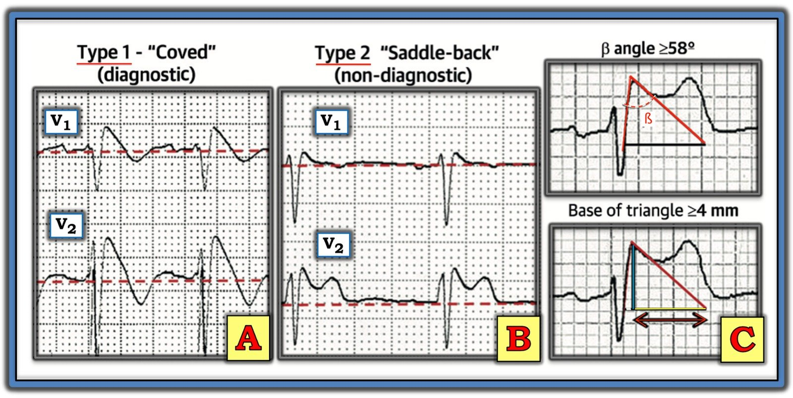
Về hội chứng BRUGADA so với kiểu hình sao chép (Phenocopy):
- Hình ảnh điện tâm đồ Brugada típ 1 được chẩn đoán khi thấy ST chênh lên ≥2 mm ở một hoặc nhiều chuyển đạo trước tim phải (tức là V1, V2, V3) — theo sau là sóng r’ và đoạn ST dạng vòm (coving) hoặc thẳng — trong đó đoạn ST cắt qua đường đẳng điện và kết thúc bằng sóng T âm (Xem Ô A trong Hình 1).
- Hình ảnh Brugada típ 1 có thể được ghi nhận một cách tự phát (khi chuyển đạo V1 và/hoặc V2 được đặt ở vị trí bình thường — hoặc được đặt cao hơn thường lệ 1 hoặc 2 khoang liên sườn) — hoặc — hình ảnh Brugada típ 1 có thể được ghi nhận khi làm nghiệm pháp kích thích bằng thuốc sau khi tiêm tĩnh mạch một thuốc chẹn kênh natri như ajmaline, flecainide hoặc procainamide.
- LƯU Ý #1: Mặc dù Ô A trong Hình 1 minh họa hình dạng điển hình của hình ảnh điện tâm đồ Brugada típ 1 — vẫn có những biến tấu của “chủ đề” này. Mẫu số chung của các hình ảnh điện tâm đồ Brugada típ 1 là ST chênh lên lẽ ra không có ở ≥1 chuyển đạo trước tim phải — theo sau là đoạn ST dốc xuống nhanh vào sóng T âm. Đoạn ST chênh lên thường đi xuống dốc đứng — nhưng đôi khi nó có thể có dạng tròn hơn.
- LƯU Ý #2: Trong những năm trước, chẩn đoán hội chứng Brugada không chỉ đòi hỏi có hình ảnh điện tâm đồ Brugada típ 1 — mà còn đòi hỏi tiền sử đột tử, VT bền bỉ, ngất không do phản xạ phế vị hoặc tiền sử gia đình có người đột tử khi còn trẻ. Định nghĩa này đã được thay đổi sau một hội đồng đồng thuận chuyên gia năm 2013 — vì vậy hiện nay, tất cả những gì cần để chẩn đoán hội chứng Brugada là hình ảnh điện tâm đồ Brugada típ 1 tự phát hoặc được gây ra, không cần thêm tiêu chuẩn nào khác.
- Ô B trong Hình 1 minh họa hình ảnh điện tâm đồ Brugada típ 2 hay hình ảnh “yên ngựa” (saddle-back). Hình ảnh này có thể gợi ý — nhưng không đủ để chẩn đoán hội chứng Brugada. Tùy theo có hay không có các yếu tố lâm sàng khác — bản thân hình ảnh điện tâm đồ Brugada típ 2 (tức là không kèm hình ảnh Brugada típ 1) — có thể không có ý nghĩa lâm sàng.
- Điểm MẤU CHỐT: Một số tình trạng khác ngoài hội chứng Brugada có thể tạm thời tạo ra hình ảnh điện tâm đồ Brugada típ 1 (World J Cardiol 6(3):81-86, 2014). Các tình trạng này gồm (cùng nhiều tình trạng khác) — bệnh lý sốt cấp — thay đổi trương lực thần kinh tự chủ (như có thể xảy ra khi ngất) — hạ thân nhiệt — thiếu máu cục bộ hoặc nhồi máu — ngừng tim — và rối loạn điện giải (đặc biệt là tăng kali máu — nhưng cũng có thể là hạ kali máu/hạ natri máu). Những bệnh nhân có các tình trạng như vậy, vốn có thể tạm thời bắt chước các dấu hiệu điện tâm đồ của hình ảnh Brugada típ 1, được gọi là có kiểu hình sao chép Brugada (Brugada Phenocopy).
- Tầm quan trọng của việc nhận biết hiện tượng kiểu hình sao chép Brugada này — là việc điều chỉnh tình trạng nền có thể làm hình ảnh điện tâm đồ Brugada típ 1 biến mất (với tiên lượng tốt hơn nhiều so với bệnh nhân mắc hội chứng Brugada thực sự).
- NẾU về mặt lâm sàng đã rõ ràng rằng sự xuất hiện thoáng qua của hình ảnh điện tâm đồ Brugada típ 1 là “thuần túy” kiểu hình sao chép (và chỉ do một bệnh lý hoặc tình trạng cấp tính dễ dàng điều chỉnh được) — thì có thể không cần đánh giá thêm. Ngược lại — nếu bệnh nhân có các yếu tố nguy cơ khác, tiền sử gia đình dương tính, hoặc có những mối lo ngại lâm sàng khác — thì có thể chuyển bệnh nhân làm nghiệm pháp kích thích bằng thuốc chẹn kênh natri để loại trừ hội chứng Brugada.
Những thiếu sót trong ca hôm nay là gì?
Với tinh thần góp ý mang tính xây dựng — tôi nghĩ có thể sẽ hữu ích khi điểm lại chuỗi thiếu sót đã mắc phải trong ca hôm nay.
- Như bác sĩ Meyers đã nêu — bối cảnh lâm sàng trong ca hôm nay là MẤU CHỐT. Bệnh nhân hôm nay đến khám vì yếu người cấp, ngất và sốt, nhưng không đau ngực hay khó thở. Do đó — chúng ta cần nhận ra ngay một số yếu tố có thể tạo thuận lợi cho kiểu hình sao chép Brugada ở bệnh nhân không có triệu chứng tim cấp tính này.
- Như bác sĩ Meyers đã nêu — điện tâm đồ ban đầu trong ca hôm nay rõ ràng là bất thường, với ST chênh lên ở các chuyển đạo V1 đến V3 và thoáng gợi ý ST chênh xuống ở các chuyển đạo V5,V6 (Xem điện tâm đồ #1 — mà tôi đã đặt lại trong Hình 1). NẾU bệnh nhân này có cơn đau ngực mới khởi phát nghe có vẻ do tim — tôi sẽ không chút do dự mà kích hoạt ngay phòng thông tim.
- Dù vậy — khi không có đau ngực, và có nhiều triệu chứng có thể tạo thuận lợi cho kiểu hình sao chép Brugada (tức là ngất — sốt — và yếu người có thể liên quan đến rối loạn điện giải) — tôi nghĩ “bức tranh” ST chênh lên ở điện tâm đồ #1, có dạng tròn, đi xuống dốc đứng vào sóng T âm ở phần cuối, hiện diện ngang nhau ở V1,V2,V3 nhưng không có ở các chuyển đạo ngực khác — nhiều khả năng biểu hiện hình ảnh Brugada típ 1 do kiểu hình sao chép, hơn là nhồi máu cấp.
- Điện tâm đồ trước đó đã bị đọc sai. Dù đúng là ST chênh lên vùng trước không có trên điện tâm đồ ghi 1 tháng trước đó — điều này không nhất thiết có nghĩa là ST chênh lên mới xuất hiện trên điện tâm đồ ban đầu hôm nay cho thấy nhồi máu trước vách cấp. Ngược lại — tôi nghĩ điện tâm đồ trước đó ủng hộ nhận định kiểu hình sao chép Brugada của tôi vì: i) Cả 9 chuyển đạo còn lại ở điện tâm đồ #2 trông gần như giống hệt các chuyển đạo I,II,III; aVR,L,F; và V4,5,6 ở điện tâm đồ #1 (kể cả thoáng gợi ý ST chênh xuống ở chuyển đạo V6); và, ii) Dù không chênh lên — hình dạng của đoạn ST ở chuyển đạo V1 của điện tâm đồ #2 đã có dạng tròn ngay trên bản ghi trước đó (tức là NẾU kiểu hình sao chép Brugada chồng lên bản ghi nền của bệnh nhân này — nó có thể trông giống hệt “bức tranh” điện tâm đồ tổng thể mà chúng ta thấy ở điện tâm đồ #1).
- ĐIỀU CỐT LÕI: Đôi khi có thể cực kỳ khó phân biệt giữa ST chênh lên vùng trước do hình ảnh kiểu hình sao chép Brugada lành tính với STEMI trước vách cấp. Luôn thận trọng là điều khôn ngoan! Dù vậy — khi không có bất kỳ triệu chứng tim cấp tính nào — và có các tình trạng tạo thuận lợi cho kiểu hình sao chép Brugada + một hình ảnh điện tâm đồ trông giống Brugada típ 1 ở các chuyển đạo V1,2,3 — nhưng không có thay đổi ST-sóng T cấp ở các chuyển đạo khác — thì kiểu hình sao chép Brugada trở nên có khả năng hơn nhiều. Do đó có thể không cần vội đưa bệnh nhân đi thông tim — đặc biệt nếu troponin trả về bình thường — siêu âm tim tại giường không thấy rối loạn vận động thành khu trú — và đặc biệt NẾU khi bệnh nhân hạ sốt — hết ngất — và mọi rối loạn điện giải được điều chỉnh — các điện tâm đồ ghi lại cho thấy ST chênh lên vùng trước giảm đi.

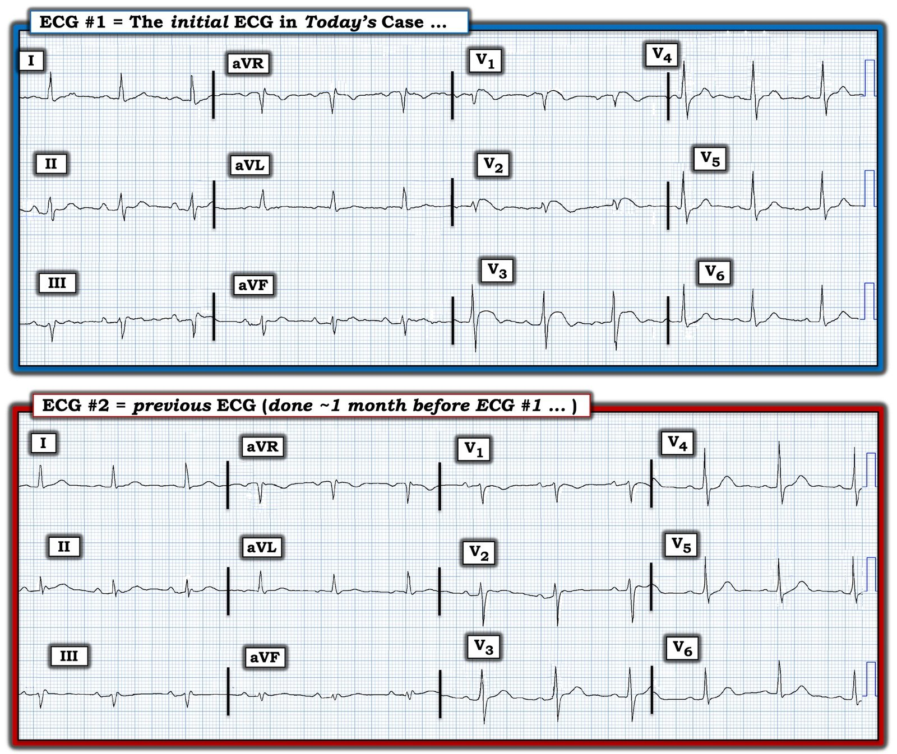